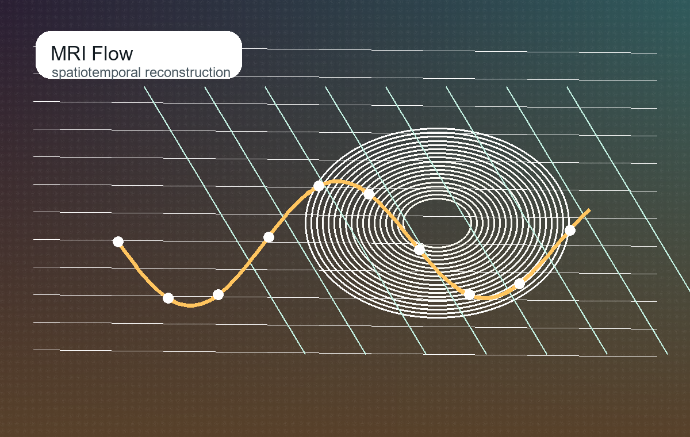
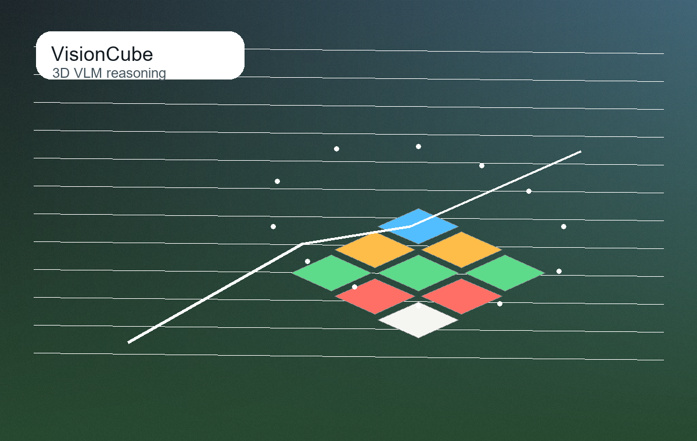
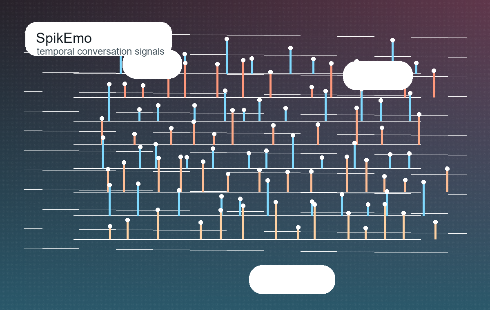
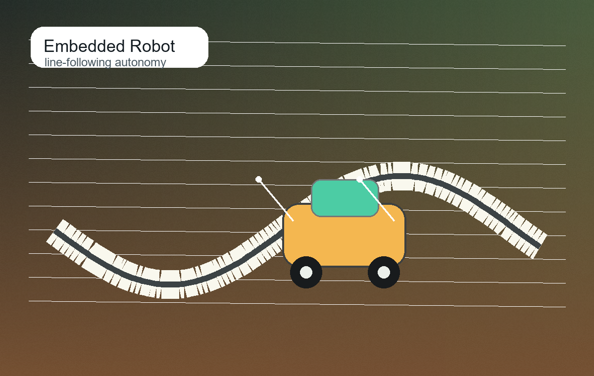

Vision-Language Reasoning
Multi-step spatial reasoning, chain-of-thought planning, and multimodal benchmarks for tasks that demand grounded visual structure.
I work across medical image reconstruction, vision-language reasoning, 3D perception, and embodied AI systems, with a taste for models that can survive the jump from benchmark to real task.
My work sits at the intersection of perception, structured reasoning, and deployment. I like problems where the model has to make a useful intermediate representation before it can answer or act.
Multi-step spatial reasoning, chain-of-thought planning, and multimodal benchmarks for tasks that demand grounded visual structure.
Language-grounded manipulation, 3D representations, simulated robotic-arm execution, and compact embedded autonomy prototypes.
Dynamic parallel MRI reconstruction with flow matching, temporal extrapolation, data consistency, and uncertainty-aware reconstruction.
Filter by theme or copy BibTeX directly. The list emphasizes work that connects representation, reasoning, and deployment.
Proceedings of the Computer Vision and Pattern Recognition Conference, 2025: 3270-3279.
Companion Proceedings of the ACM on Web Conference 2025, 2025: 2181-2186.
Proceedings of the International Joint Conference on Neural Networks, 2025: 1-7.
Early Accept at MICCAI 2026.
A more visual pass through the work: medical imaging, 3D reasoning, temporal signals, and compact embodied systems.

Unsupervised dynamic parallel MRI reconstruction using spatiotemporal flow matching, ALiBi attention, and data-consistency-aware inference.

Vision-language reasoning for Rubik's cube manipulation, with multi-step planning, memory-guided replanning, and 3D-aware representation learning.

Spiking temporal dynamics for emotion recognition in conversations, designed to capture time-sensitive conversational signals.

Sensor-driven autonomous navigation prototype with embedded control logic, motor control, and iterative track testing.
A compact record of training, research, and hands-on engineering experience.
MRes in Artificial Intelligence and Machine Learning. Research on trustworthy AI, dynamic MRI reconstruction, flow matching, and uncertainty propagation.
Bachelor of Artificial Intelligence, with coursework across biometric recognition, robotics, medical image processing, NLP, deep learning, and pattern recognition.
Large-model R&D, dataset annotation, fine-tuning experiments, and an intelligent line-following vehicle prototype.